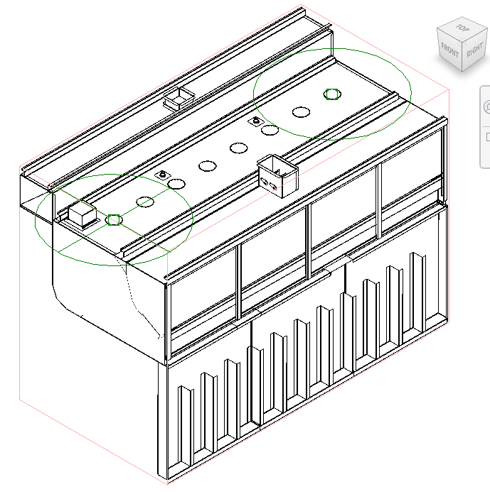
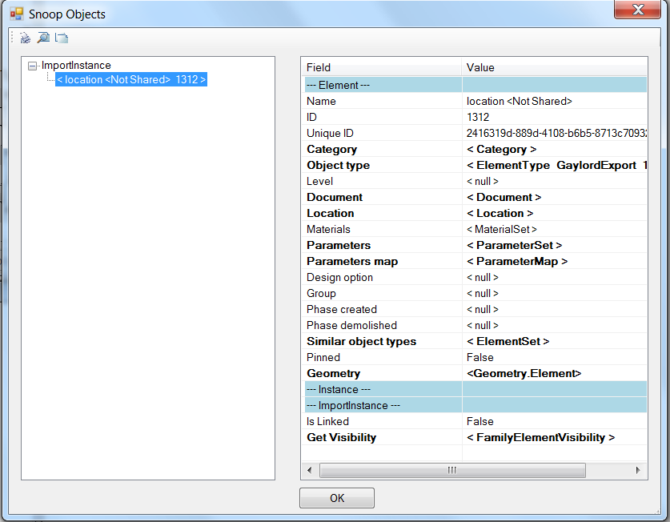

ADSK File Import and Phase of Room
I already had one look at loading an Inventor ADSK component using the OpenBuildingComponentDocument method.
Ishwar Nagwani of Autodesk Consulting now revisited this topic from a different perspective and explains:
I came across another tricky issue while developing Revit add-in to import an ADSK file. I looked at your previous post on this when I started looking for way to open ADSK file in Revit and it helped me lot.
The ADSK file is created in Inventor and then processed in Revit to create an RFA file. This is part of a bigger project which does lots of other stuff like adding shared parameters etc.
The ADSK file after importing contains two ImportInstances. One of these is the bounding box, the other is the main solid itself. The outer bounding box hides the geometry in elevation views. Here the bounding box which would be deleted is displayed in red:

These are the selected bounding box details displayed using RevitLookup:

I open the ADSK file using the OpenBuildingComponentDocument method and then delete the bounding box in a separate transaction.
The following method retrieves the ImportInstances and deletes the one representing the bounding box, identified by the fact that it only has exactly six faces:
/// <summary> /// This method deletes the outer bounding box /// of an imported ADSK file in Revit. If this /// bounding box is not deleted, the elevation /// views cannot be seen. After importing an /// ADSK file the two ImportInstance objects /// are created in Revit, one for outer /// bounding box and the other for main solid. /// </summary> void DeleteOuterBox( Document doc ) { // Instantiate this once only: Options opt = doc.Application.Create .NewGeometryOptions(); // This is probably not needed: //opt.ComputeReferences = true; // Search the elements of type ImportInstance; // there will be two in case of ADSK import: FilteredElementCollector collector = new FilteredElementCollector( doc ) .OfClass( typeof( ImportInstance ) ); ElementId idToDelete = null; foreach( Element e in collector ) { ImportInstance inst = e as ImportInstance; if( inst != null ) { // Get the Solid from ImportInstance GeometryElement geomElem = inst.get_Geometry( opt ); // GeometryElement.Objects is obsolete, // so use LINQ extension methods instead. //GeometryObjectArray geomObjArray // = geomElem.Objects; int n = geomElem.Count<GeometryObject>(); if( 1 == n ) { Solid solid = geomElem .First<GeometryObject>() as Solid; if( null != solid ) { // The outer bounding box // has just 6 faces. if( solid.Faces.Size == 6 ) { // Do not delete during iteration;// remember the id instead. //doc.Delete( e.Id ); idToDelete = e.Id; break; } } } if( null != idToDelete ) { doc.Delete( idToDelete ); } } } }
Many thanks to Ishwar for this nice example!
Determining the Phase of a Room
Here is another issue brought up and solved by Håkon Clausen, whose RevitRubyShell I recently waxed so enthusiastic about:
Question: How do I find which phase a room is in?
From the UI, the phase is uneditable and is the same phase as the view you created it in. Unfortunately, the room CreatedPhaseId and DemolishedPhaseId properties are not valid (-1, InvalidElementId) and the Room class provides no explicit phase access. I looked through your posts regarding phases, on phase dependent room properties and the family instance room phase. They do not help, as they only describe how to determine the phases on family instances, not on the room itself.
Answer: I solved it by reading the built-in parameter value for ROOM_PHASE_ID on the room element.
On an interesting side note, I needed the same information for Mechanical.Space objects, and this also worked by accessing the same built-in parameter ROOM_PHASE_ID, which is a little obscure, I think...
Thank you, Håkon, for raising and clarifying this.
The same credit also goes to Martino, who posted a comment to the same effect on the view and phase filtering discussion.